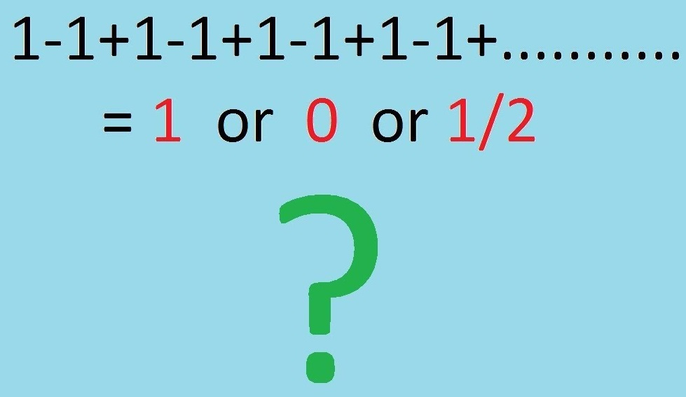

নিবন্ধ 1 একে একে শূন্য

একবার শহর থেকে এক লোক গ্রামে ঘুরতে গেলেন। কিন্তু পথ হারিয়ে ফেলায় রাতে আর আসা হলো না। ওদিকে কোন আত্মীয়ও নেইযার বাসায় রাতটা কাটানো যায়। কারো বাড়িতে আশ্রয়ও পেলেন না। শেষে এক লোকতাকে এক পোড়া বাড়ির সন্ধান দিলো। ভূতে তার বিশ্বাস নেই। ভদ্রলোক সেখানেইরাতটা কাটিয়ে দিলেন। ভোরের দিকে ভূত এসে হাজির! যেন তেন ভূত নয়,ধবধবে সাদাকাপড় পরিহিত কঙ্কালসার এক ভূত। হাতে চিক চিক করছে ধারালো ছুরির ফলা। কাছে এসে সে ঘোষণা করল,আমার আস্তানায় এসেছো,মরতে হবে তোমাকে। লোকটা কাকুতি জানাল, “দেখ, আমি তোমার কোন পাকা ধানে মই দেইনি। আমার আর কোন উপায় ছিল না।”
ভূত: হ্যাঁ, সুযোগ একটা তোমাকে দিতে পারি। দেখি তোমার গণিতে মাথা কেমন। আচ্ছা, বল দুইয়ে দুইয়ে কত? সময় দশ মিনিট। বলতে পারলে বেঁচে যাবে।
লোকটা মনে মনে ভীষণ খুশি। যাহ! বাঁচলাম। ভূতটার মাথায় তো গোবর ছাড়া কিছু নেই।
দশ মিনিট পর..
ভূত: হ্যাঁ,বল, দুইয়ে দুইয়ে কত?
লোকটি বলল: কত আর, চার।
ভূত: ইস! বাঁচতে আর পারলে না। দুইয়ে দুইয়ে হলো শুন্য। কে বলেছে তোমাকে যোগ করতে? একটু অপেক্ষা কর। ছুরিটায় একটু শান দিয়ে নিই।
লোকটাকে দেখিয়ে দেখিয়ে সে ছুরিতে শান দিতে থাকলো।
ততক্ষণে ভোরের আলো দেখা দিতে সে বলল, “ওহ হো, ভোর হয়ে গেল। বেঁচে গেলে। ভাগ্য ভালো তোমার।”
আসলে পুরোটাই ছিল রসিকতা। ভূতটা ছিল গাঁয়ের এক মহা রসিক লোক।
এবার আমি আরও সহজ একটি অঙ্ক দেই। বলুন তো, একে একে কত?
ভাবছেন, কোনটা বলে আবার বিপদে পড়ি। উত্তর হতে পারে ১, ২ বা ০। আচ্ছা, আমি কি বলে দিয়েছি দুইটা ১?
না, বরং মান বের করুন ১-১+১-১+১-১+১-…অসীম পর্যন্ত।
এর উত্তর বলা যদি পানির মত ভেবে থাকেন,তাহলে ভাবনা ঠিক আছে। কারণ,রসায়নের ভাষায় পানির গঠন ’সরল’কিছু নয়, বরং খুবই জটিল। তো এই সহজদর্শন ধারা পানির মতো জটিল কী করে হলো?
সামনে যাবার আগে একটা কাজ করুন। নিজের মতো করে এই ধারার যোগফল বের করুন।
এবার একত্রে করি,
প্রথমে চলুন, ধারাটিকে টেলিস্কোপ দিয়ে দেখি। মানে, কাটাকাটি দিয়ে ধারাটিকে ছোট করে নেই। যে ধারার উপর এমন ছুরি চালানো হয়, তাকেই বলে টেলিস্কোপিক ধারা। তাই আপনাকে টেলিস্কোপ কিনতে হচ্ছে না। বেঁচে গেলেন!
ধরি, ধারাটির সমষ্টি = S।
তাহলে, S = ১−১ + ১−১ + ১−১ + ১−১ + …
= (১−১) + (১−১) + (১−১) + … = ০ + ০ + ০ + …
= ০
তাহলে পেলাম ,একে একে শুন্য।
কিন্তু ভদ্রলোকের এক কথা- প্রবাদটা আমরা মানি না। এবার অন্যভাবে দেখি।
আমাদের আছে, S = ১−১ + ১−১ + ১−১ + ১−১ + …
প্রথম ১ টিকে বাইরে নিয়ে এসে,
S = ১−১ + ১−১ + ১−১ + ১−১ + …
S = ১ + (−১ + ১) + (−১ + ১) + (−১ + ১) + …
= ১ + ০ + ০ + ০ + …
= ১
তাহলে, গুণ না করেও একে একে এক পাওয়া সম্ভব। যারা ভাবছেন, প্রথমে ১ টা ১ রেখে দিলে কাটাকাটি দেবার মত পর্যাপ্ত সংখ্যক এক কোথায় পেলাম, একটু ভাবুন, এখানে অসীমসংখ্যক ১ আছে। তাই, এর একটাকে বাইরে রাখলে কিছুই কমে না। কাটাকাটির জন্য আরও যথেষ্ট থাকে। আল্লাহর ভাণ্ডারও যেমন আর কি। কাউকে দান করলেও খালি হয় না।
আরেকভাবেচিন্তা কর, ধর, একটা হোটেলে অসীম সংখ্যক কক্ষ আছে। তাহলে যত লোকই রুমবুকিং দেয় না কেন, হোটেল কোন দিন খালি হবে না। এই হোটেল নিয়েও একটাপ্যারাডক্স আছে। ওটাকে আপাতত ফর্মালিন দিয়ে রাখলাম।
এই ধারায় ফলাফল ১পাওয়ার প্রক্রিয়াটির নাম হচ্ছে আইলেনবার্গ-মাজুর প্রতারণা (Eilenberg–Mazur swindle)। এই কৌশল দিয়ে দেখানোর চেষ্টা করা হয় ১ = ০।
প্রতারণাটা এ রকম,
১ = ১ + (−১ + ১) + (−১ + ১) + … = ১−১ + ১−১ + … = (১−১) + (১−১) + … = ০
এবার, আরেকভাবে সমষ্টি বের করি।
S = ১−১ + ১−১ + ১−১ + ১−১ + …
সুতরাং, ১− S = ১− (১−১ + ১−১ + …) = ১−১ + ১−১ + … = S,
অর্থ্যাৎ, ১− S = S
∴ S + S = ১
∴ ২S = ১
বা S = ০.৫
এখানেইকিন্তু শেষ নয়। পূর্বোল্লিখিত টেলিস্কোপিক মেথড দিয়ে একটা ১ এর বদলে দুই, তিন…বা ইচ্ছামতো সংখ্যক এক-কে (১) বাইরে রেখে প্রমাণ করা যাবে যে সমষ্টি তত যেমন, ২,৩ ইত্যাদি, যা ইচ্ছে। তাহলে, সমস্যাটা কোথায়?
আসলে ব্যাপার হচ্ছে, এখানে ধারাটিকে যোগ করার সময় আমরা একেবারেই ভুলে যাচ্ছি ‘ধারা’ বলতে কী বোঝায়। যারা এসএসসি পড়ছো বা শেষ করেছেন, তারা গণিত বইয়ে এমনধারা দেখে থাকবে। তবে, পার্থক্য আছে। সেখানে পদসংখ্যা অসীম ছিল না। বলা থাকতো, 2n+1 সংখ্যক পদের যোগফল কত ইত্যাদি। এমন শর্ত থাকলে কিন্তু ধারাটিতে আর কোন প্যারাডক্সের অস্তিত্ব থাকবে না।
যেমন, আমরা যদি ধারাটিকে 2n+1 তম পদ পর্যন্তবিবেচনা করি, তবে এর সমষ্টি হবে ১। কারণ, 2n+1 হচ্ছে বিজোড় সংখ্যার প্রতীক।আর আমাদের ধারার প্রত্যেক জোড়ার যোগফল শুন্য, বাড়তি থাকে আরেকটি এক।কিন্তু যদি জোড় সংখ্যক পদ যেমন 2n নেই, তবে প্রতি জোড়ার অঙ্কদ্বয় একে অপরকে শেষ করে দেয়। যোগফল হয় ১।
কিন্তু, আমাদের আলোচ্য ধারায় পদের সংখ্যা নির্দিষ্ট নয়, বরং অসীম। আর, এ কারণেই দেখা যাচ্ছে একাধিক সমষ্টি। এই সিরিজের এমন অস্বাভাবিকতায় শেষ পর্যন্ত গণিত মহলে মত দাঁড়াল দুটো।
- এই ধারার কোন সমষ্টি নেই।
- এই ধারার সমষ্টি ০.৫।
একসময় এই ধারার এই দুই ফলাফল নিয়ে গণিতবিদদের মধ্যে তুমুল বিতর্ক হতো। ফলাফল ‘১’ নিয়ে হতো না, কারণ যে যুক্তিতে এক হয় সেই যুক্তিতেই ২, ৩ ইত্যাদি যাচ্ছেতাই হতে পারে। তাই টেলিস্কোপিক মেথড বাদ। যুক্তি দাঁড়ালো সমষ্টিই নেই।
এখন, আমাদেরকে দেখতে হবে, আমরা আসলে কোন ধারার পদগুলোকে পুনর্বিন্যাস (Rearrangement) করতে পারি কিনা। হ্যাঁ, পারি বটে। তবে শর্ত মেনে। ধারাটিকে হতে হবে অভিসারী (Convergent)। কিন্তু আমাদের আলোচ্য ধারাটি অপসারী (Divergent)।
চলুন, সংক্ষেপে অপসারী ও অভিসারী ধারা সম্পর্কে জেনে নিই।
আগে নিচের দুটি ধারার দিকে তাকান।
\(\frac 1 2 + \frac 1 4 + \frac 1 8 + \frac 1 {16} + ...\) অসীম \(\infty\) পর্যন্ত
\(\frac 1 2 + \frac 1 3 + \frac 1 5 + \frac 1 7 + \frac 1 {11} + ...\) অসীম পর্যন্ত
প্রথম ধারাটি অসীম পর্যন্ত গেলেও আমরা যদি অসীমতম পদ বিবেচনা করি তবে, মান পাবো ০। কারণ, \(\frac{1}{\infty}=\frac 1 {\frac{1}{0}}=1 \times \frac{1}{0}=0\)। অর্থাৎ, এই ধারাটিতে অসীম পদ থাকলেও তাদের একটা সসীম লক্ষ্য আছে। এরা শূন্যের দিকে যাচ্ছে। আর, এর পদগুলোর মানও কিন্তু ধীরে ধীরে, একটা ধারাবাহিকতা বজায় রেখে কমছে। ঠিক যেন, অবতল দর্পণ থেকে প্রতিফলিত বা উত্তল দর্পণ থেকে প্রতিসরিত আলোর মতো। তাই, দর্পণ বা লেন্সের মতই একে অভিসারী ধারা বলা হয়। এ ধরণের ধারা পদকে পুনর্বিন্যাস করা যাব। অভিসারী ধারার তাই সমষ্টি বের করা সম্ভব।
যেমন, এই ধারার যোগফল কিন্তু ১ যা একটি সসীম সংখ্যা।
Figure 1.1: Guido Grandi
চিত্র: গুইদো গ্রান্দি এই ধারাটির প্রথম সরল বিবরণ দেন1
এবার ২য় ধারাটির দিকে তাকাই। এটা হচ্ছে মৌলিক সংখ্যাগুলোর বিপরীত সংখ্যাগুলোর সমষ্টি। এতেও অসীম পদ আছে। কিন্তু অসীমতো অসীমই। এর মান কি নির্দিষ্ট কোন কিছুর দিকে যাচ্ছে? না। তাহলে এটি অপসারী। এর কোনো লক্ষ্যই নেই। পদগুলোর মধ্যে নেই কোন ধারাবাহিক মিল। তাই, এটি অপসারী ধারা। এর যোগফল কত? জিজ্ঞেস করলে কেউ কোনো নির্দিষ্ট সংখ্যা বলতে পারবে না। বলবে, ‘অসীম’।
আমাদের আলোচ্য ধারাও গন্তব্যহীন। নেই কোনো বিশেষ লক্ষ্য। যেন মাঝ দরিয়ায় হাবুডুবু খাচ্ছে, এক বার মাথা পানির উপর ভেসে উঠছে, আবার পরক্ষণেই ডুবে যাচ্ছে। তাই, এর পদগুলোকে পুনর্বিন্যাস করলে ন্যায়বিচার করা হবে না। এ জন্যেই একটি মত হচ্ছে, এর কোন সমষ্টিই নেই।
গণিতবিদ সিজারো এবং অ্যাবেল আধুনিক গণিতকাজে লাগিয়ে দেখিয়েছেন, এর সমষ্টি হয় ০.৫। এটাই সবচেয়ে প্রচলিত মত। তাদেরপ্রক্রিয়াটিও পানির মতই সহজ। তাই, আজ আর সেদিকে পা বাড়ালাম না। তবে, এই প্রক্রিয়ায় অভিসারী ধারার শর্ত ভঙ্গ করা হয় না।ধারাটিকে অসীম গুণোত্তর ধারা ধরে হিসেব করলেও ০.৫ ই আসে। তোমরা সেটা আমার চেয়ে ভালোই পারো। এক বার করে ফেলো, তাহলে।
ইতালিয়ান গণিতবিদ গুইদো গ্রান্দি এই ধারাটির প্রথম সরল বিবরণ দেন বলে ধারাটিকে বলা হয় গ্রান্দির ধারা।↩︎